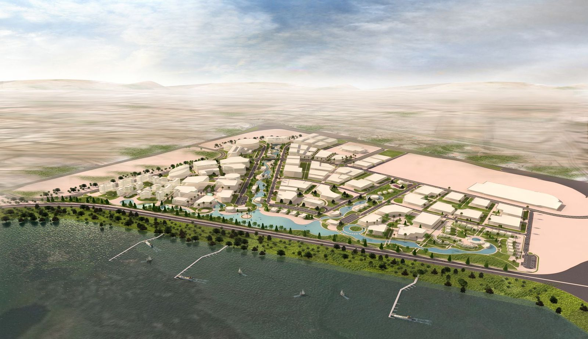

Alex Gate Mixed Use Development
Mixed-use development · Alexandria, Egypt
Urban planning and urban design for Alex Gate, a mixed-use development in Alexandria, for Alexandria Governorate, funded by the World Bank.
Partners
PUD
Client


More from Alexandria
 Abu Qir City and Port ExtensionAbu Qir, Alexandria · 20212006Alex Gate Master Plan (Alexandria Growth Pole Project)Alexandria · 20061984Planning of the Region between Maxx District (8th km) and the 34th km West of AlexandriaWest of Alexandria · 1984
Abu Qir City and Port ExtensionAbu Qir, Alexandria · 20212006Alex Gate Master Plan (Alexandria Growth Pole Project)Alexandria · 20061984Planning of the Region between Maxx District (8th km) and the 34th km West of AlexandriaWest of Alexandria · 1984 Sumou Boulevard, New CairoMostakbal City, New Cairo · 2026
Sumou Boulevard, New CairoMostakbal City, New Cairo · 2026 Al Alamein Riviera Vision Master PlanNorth Coast (New Alamein) · 2022
Al Alamein Riviera Vision Master PlanNorth Coast (New Alamein) · 2022 Gargoub New Port CityGargoub, Matrouh · 2021
Gargoub New Port CityGargoub, Matrouh · 2021